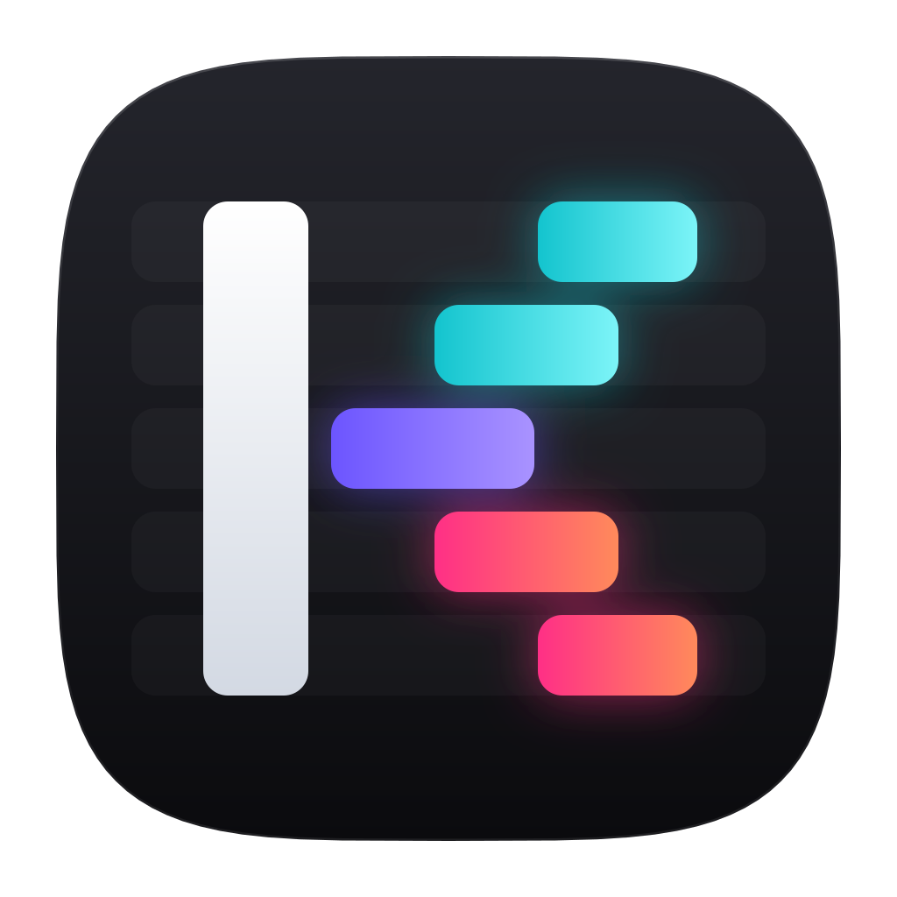

MCP for AI agents
kadr-mcp.exe exposes every command as a tool. Claude can build a timeline, look at rendered frames with preview_frame and fix its own mistakes.
Kadr is a CapCut-style editor for Windows where every button, slider and shortcut is also an API command. Edit by hand, script it over REST and the CLI, or just ask Claude — it all runs on your machine.
Kadr is available by invitation.
Connect ClaudeThe editor, the REST API, the MCP server, the CLI and these docs are generated from one command registry — so they can never drift apart. Each of the 254 commands ships with a description written for AI agents, typed parameters with units, examples and actionable error hints.
kadr-mcp.exe exposes every command as a tool. Claude can build a timeline, look at rendered frames with preview_frame and fix its own mistakes.
POST /api/v1/commands/<name> on 127.0.0.1, token-protected. Atomic batches become a single undo step. OpenAPI 3 spec included.
kadrctl run any command with human time values like 2.5s. Subscribe to WebSocket events and watch the UI update while a script edits.
A dark, fast, familiar editor: magnetic main track, keyframes with easing, speed curves, masks, chroma key, blend modes and a deep library of original transitions, filters, effects and text styles — all rendered locally.
Cube turns, card flips, page peels, iris shapes, ripples, swirls, glitches, light leaks and film burns — with direction and softness. One call applies a transition to every cut.
Plus HSL, tone curves, LUTs, auto adjust and keyframable intensity.
114 word-art effects (chrome, neon, 3D extrude, gradients), 137 per-letter animations (typewriter, scramble, karaoke sweep, wave), 175 templates, curved text and 146 free fonts to download.
Position, scale, rotation, opacity, volume, colour and filter intensity — ease in/out, everything undoable.
Montage, hero, bullet, jump cut, flash in/out or your own points, with pitch-preserving audio.
Linear, mirror, circle, rectangle, heart and star masks with feather; chroma key; 14 blend modes.
Ripple delete, delete left/right Q W, split Ctrl+B, freeze, reverse, linked audio, snapping, markers.
Auto captions run on your own computer with Whisper — around 100 languages, word-level timing, GPU-accelerated when you have one. Every word can light up as it is spoken.
Kadr writes your captions right on your computer. Every word lights up as it is spoken.
Voice: tts.speak · captions: captions.auto · rendered by Kadr
Turn any text clip into a voice-over with Windows voices, eSpeak NG or your own ElevenLabs key, then stretch the text to match.
tts.from_text {"sync_duration": true}
Whooshes, risers, pops, dings, impacts, shutters and countdown beeps — synthesised, original, royalty-free.
Radio, walkie-talkie, cathedral, chipmunk, robot and more. Plus noise reduction, loudness normalisation, fades and keyframed volume.
Smart tools run as background jobs on your machine and report progress as events — so agents and scripts can chain them.
A local ONNX matting model cuts the subject out of any clip — no green screen. Above: before and after, rendered by Kadr.
ai.remove_background
Detects every cut in long footage and splits the clip so you can rearrange shots.
ai.split_scenes
Finds pauses by loudness and ripple-cuts them out, with padding so speech never clips.
ai.remove_silence
Turns 16:9 into 9:16 by tracking what matters and writing smoothed position keyframes.
ai.auto_reframe {"ratio": "9:16"}
Hardware encoders on NVIDIA, Intel and AMD GPUs with automatic fallback to the CPU. Watch progress live over WebSocket.
Rendering, captions, voices and smart tools all run locally. The API listens only on 127.0.0.1 and requires a token stored in your profile. Kadr has no accounts and no telemetry — the only things it ever downloads are updates and, once, FFmpeg.
| Capability | Typical online editor | Typical pro desktop editor | |
|---|---|---|---|
| Every action available as a local API (REST, CLI) | Yes all 254 commands | Rarely | Partly via scripting / plugins |
| AI agents edit directly over MCP | Built in | No | Usually not |
| Works fully offline | Yes | Needs internet | Yes |
| Auto captions on your own device | Yes Whisper, ~100 languages | In the cloud | Varies |
| Media and projects stay on your PC | Always | Uploaded | Yes |
| Quick-edit library: word-art, stickers, transitions, templates | Yes | Yes | Limited |
| GPU export up to 4K HEVC, no watermark | Yes | Plan-dependent | Yes |
| Account required | No | Usually | Often |
| Price | Free | Freemium | Paid or subscription |
Comparison describes common characteristics of product categories, not any specific product.
Yes. Kadr is freeware: no account, no watermark, no subscription. It is closed source; see the licences page.
No. Kadr is an independent editor with a CapCut-style workflow. All transitions, filters, effects, stickers, sounds and text styles are original.
Anything that speaks MCP — Claude Desktop, Claude Code and other MCP clients — through kadr-mcp.exe. Anything else can use the REST API or kadrctl. See MCP setup.
Kadr itself sends nothing anywhere. An agent you connect only receives what it asks for through the API — for example a single frame from preview_frame — and only on your machine's loopback interface.
No. After the one-time FFmpeg download, editing, captions, voices and export all work offline. With an update token from the vendor, Kadr checks GitHub for updates once a day; you can turn that off.
macOS is next: a universal build for Apple silicon and Intel Macs, rendering through Metal, is being prepared. Linux is not planned yet. Today Kadr runs on Windows 10 and 11 (x64).

1.0.0 Kadr is available by invitation.